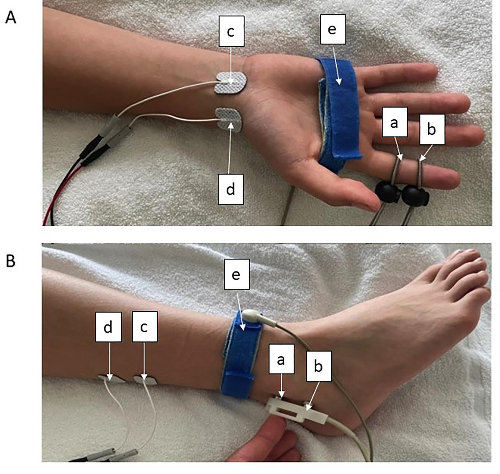

Página 11 · E5
Neoplasia, ENMG e corticoide
“Neoplasia no adulto, exame dirigido, ENMG versus RM e corticoide sem dose inventada.”
Associação com neoplasia
DM tem associação com neoplasia — pode funcionar como síndrome paraneoplásica ligada a diversos cânceres. Temporalidade: DM pode preceder, coincidir ou seguir o diagnóstico do câncer; o que importa é a associação.
DM nova → pensar em investigar neoplasia; não faz sentido imagem de corpo inteiro cega (“body scan”/PET sem critério). Investigação: lab inflamatório mínimo da doença autoimune sistêmica (hemograma, VHS e correlatos) + conversa dirigida a sintomas de outros sistemas (nódulo mamário, tosse, alteração de hábito intestinal etc.) para guiar exames. Além da queixa dirigida, cumprir rastreio oncológico etário (ex.: >50 anos — colorretal; mama e colo uterino conforme sexo/idade).
Dermatomiosite juvenil: quadro clínico semelhante na criança; sem associação com neoplasia — “esqueça” a busca paraneoplásica como no adulto.
| Pedir / fazer | Não fazer |
|---|---|
| Lab inflamatório mínimo | Body-scan/PET cego de rotina |
| Anamnese de sistemas + exame dirigido | Ignorar nódulo/queixa local |
| Rastreio etário (mama, colo, colorretal…) | Assumir DM juvenil = mesma lógica de câncer do adulto |
Exames por andar
Diagnóstico complementar: enzimas musculares (padrão miopático). ENMG: avalia nervo (2º NMS), placa e músculo — não avalia o 1º NMS. Suspeita de placa ou músculo → não faz sentido RM de crânio por default; RM de crânio no contexto de fraqueza topografa sobretudo o 1º NMS. Neuropatia periférica, placa e músculo → ENMG; 1º NMS → imagem de SNC quando indicada. Biópsia muscular: padrão-ouro, nem sempre necessária. Autoanticorpos / anti-miosite aumentam especificidade; FAN pode ser positivo mas é inespecífico (colagenose).
| Topografia | Exame que “vê” |
|---|---|
| 1º NMS | RM/imagem de SNC (quando indicada) |
| 2º / placa / músculo | ENMG |
| Músculo (confirmação) | Enzimas; biópsia se necessário |
Tratamento cobrado em prova
Base: corticoide, avaliando necessidade de outra imunoterapia; em geral responde bem ao corticoide. DM paraneoplásica tende a ser mais difícil de manejar / menos responsiva ao corticoide do que a DM isolada. O mais importante em prova sobre DM é a identificação clínica (padrão muscular + pele ± neoplasia).
Fecho do caso 1: fraqueza insidiosa + lesão de pele + nódulo mamário suspeito + enzimas ↑ → dermatomiosite; em discursiva, completar DM associada a neoplasia quando houver suspeita de câncer.

Quiz — fixação
-
DM do adulto recém-diagnosticada. Conduta cognitiva correta sobre câncer:
Gabarito B. associação sim; body-scan cego não.
A transforma associação em rastreio cego; C/D inventam filtros. “paraneoplasia = imagem total”.
-
ENMG não avalia:
Gabarito D. ENMG cobre 2º/placa/músculo.
A–C estão no escopo da ENMG. achar que “eletro vê tudo que é neuro”.
-
DM juvenil e neoplasia:
Gabarito B. dermatomiosite juvenil existe; rastreio oncológico do adulto não deve ser transplantado automaticamente.
A é o erro; C/D inventam. copiar protocolo de adulto para criança.